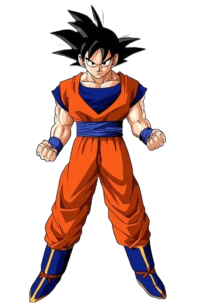
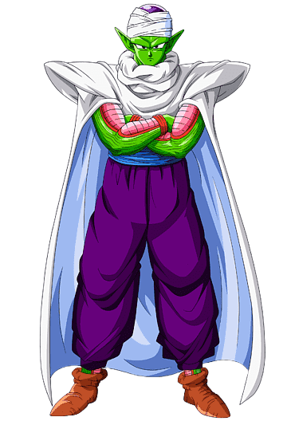
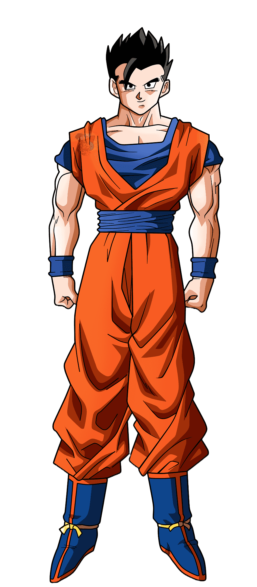
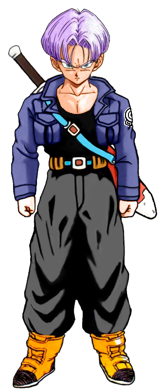
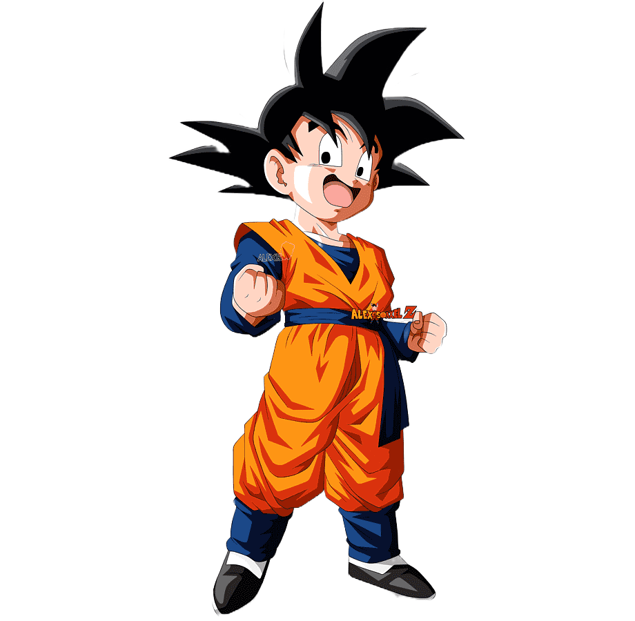
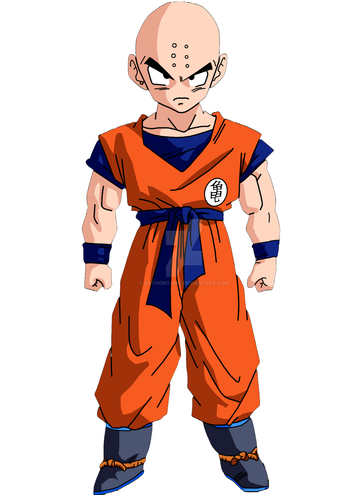

PRINCIPAIS PERSONAGENS
Vegeta
.png)
Príncipe da raça guerreira dos Saiyajins e inicialmente um antagonista, mas eventualmente se torna um aliado dos protagonistas, Goku e seus amigos. Vegeta é conhecido por sua personalidade orgulhosa, determinação e busca constante para se tornar mais poderoso.
Goku

Goku é o protagonista da série de mangá e anime Dragon Ball, criada por Akira Toriyama. Ele é um guerreiro Saiyajin da Terra, conhecido por sua bondade, coragem e amor pela luta. Goku foi criado por seu avô adotivo, Gohan, e treinou arduamente para se tornar mais forte.
Freeza
.png)
Um tirano intergaláctico e um dos seres mais poderosos do universo. Freeza pertence à raça alienígena conhecida como "Frieza's Race" e é reconhecido por sua crueldade e natureza sádica. Ele é responsável pela destruição do planeta natal dos Saiyajins, Vegeta, e por muitas outras atrocidades.
Piccolo

Originário da raça alienígena Namekuseijin e é uma fusão do vilão Piccolo Daimaoh e seu antigo inimigo, Kami. Inicialmente um adversário de Goku, Piccolo eventualmente se torna um aliado e amigo próximo dos protagonistas. Ele é conhecido por suas habilidades de luta excepcionais, incluindo o uso de técnicas como o Makankosappo (Special Beam Cannon) e a habilidade de regeneração.
Gohan

Filho de Goku e Chi-Chi, e é meio-Saiyajin, meio-Humano. Gohan é conhecido por sua natureza gentil e pacífica, mas também por seu grande potencial de combate. Ele é capaz de se transformar em diferentes níveis de Super Saiyajin, alcançando níveis de poder impressionantes.
Trunks

Filho de Vegeta e Bulma, nascido em uma linha do tempo alternativa futura. Trunks é meio-Saiyajin, meio-Humano, e é conhecido por seu cabelo roxo espetado e por usar uma jaqueta de motociclista. Ele é extremamente poderoso e habilidoso em combate, capaz de se transformar em Super Saiyajin.
Goten

É o segundo filho de Goku e Chi-Chi, e irmão mais novo de Gohan. Goten é meio-Saiyajin, meio-Humano, e é conhecido por sua semelhança física com seu pai quando era criança. Assim como seu irmão, Goten possui um grande potencial de combate e é capaz de se transformar em Super Saiyajin em uma idade muito jovem.
Kuririn

É um dos melhores amigos e aliados de Goku desde a infância. Kuririn é um humano que treinou sob a orientação do Mestre Kame, tornando-se um mestre das artes marciais. Ele é conhecido por sua coragem, inteligência e senso de humor.